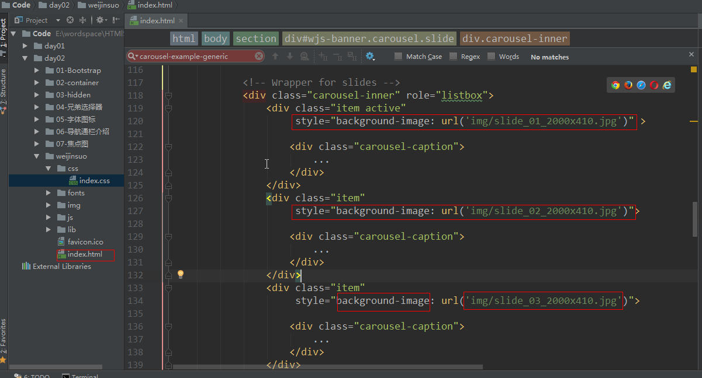
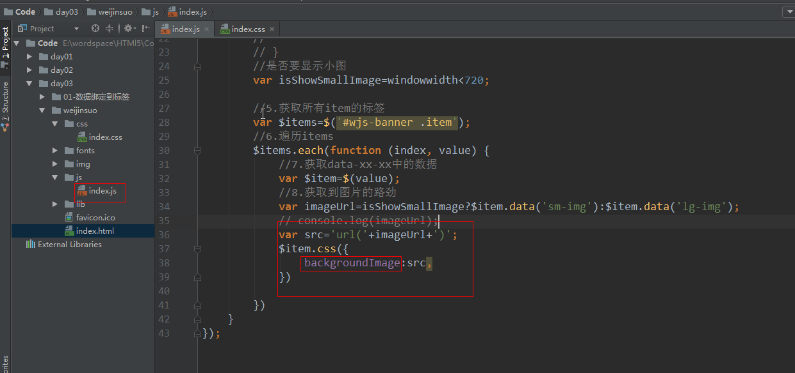
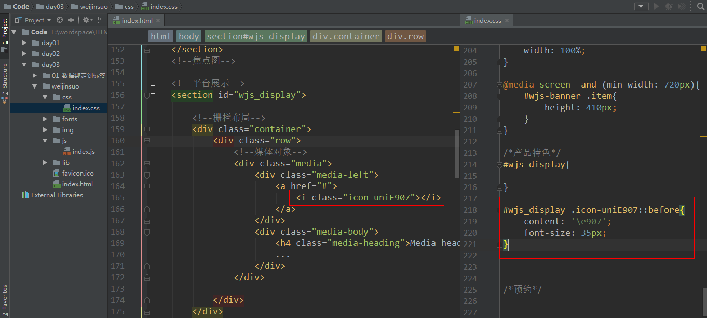
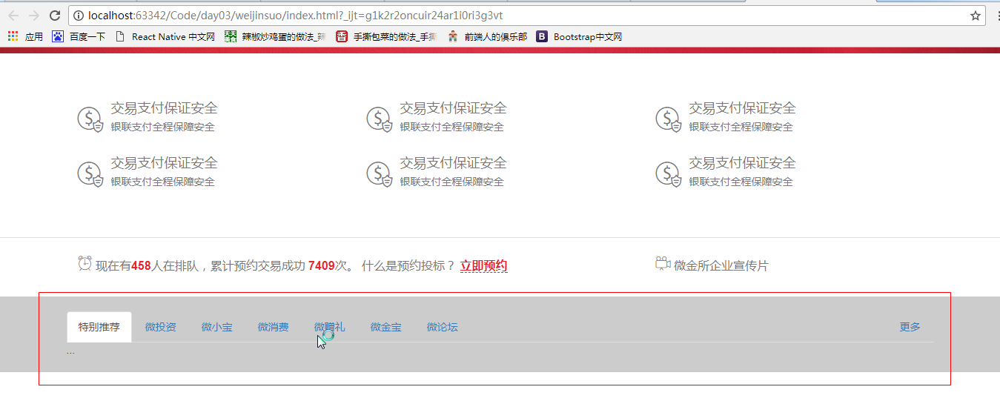
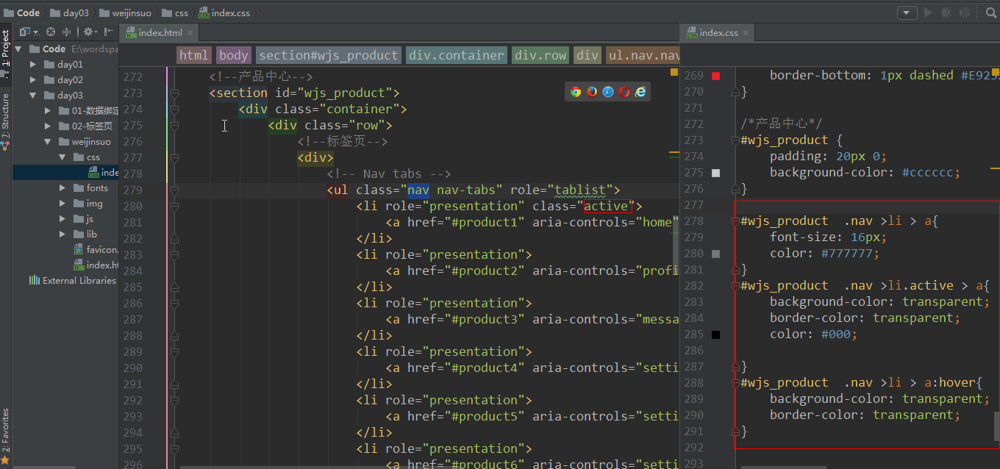
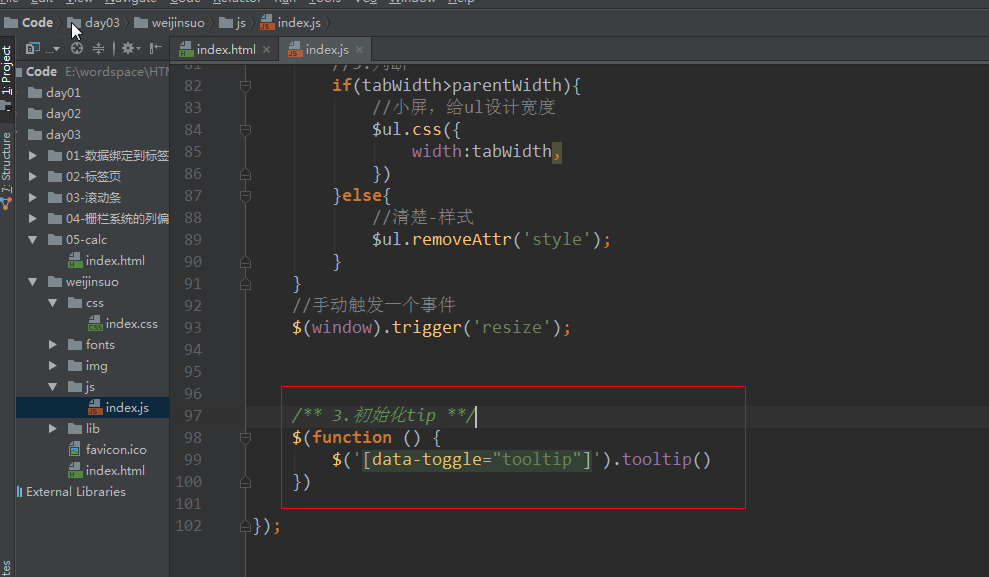
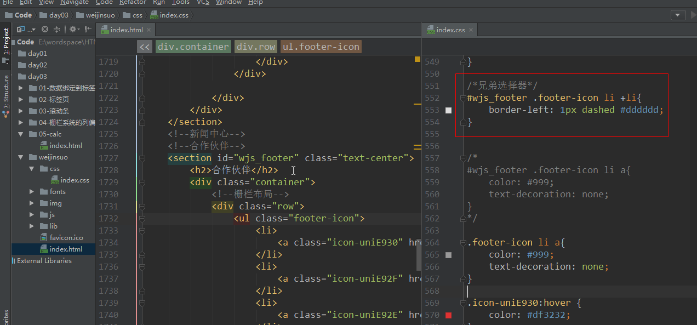
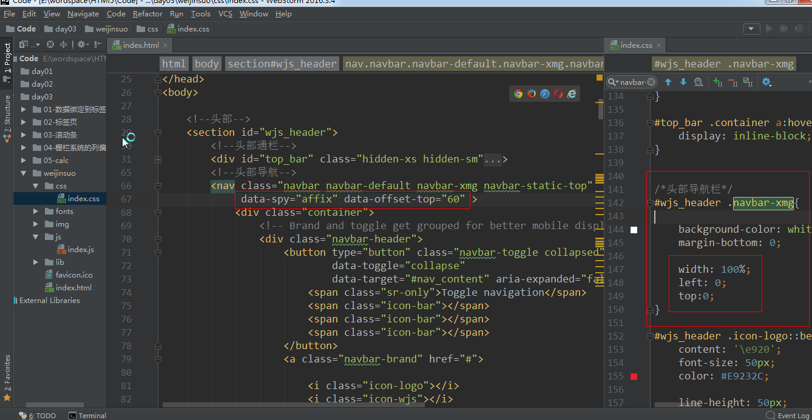

对于Bootstrap的JS插件
我们只需要将文档实例中的代码粘到我们自己的代码中
然后作出相应的样式调整
Bootstrap中轮播图插件叫作Carousel
基本的轮播图实现
<!--
以下容器就是整个轮播图组件的整体，
注意该盒子必须加上 class="carousel slide" data-ride="carousel" 表示当前是一个轮播图
bootstrap.js会自动为当前元素添加图片轮播的特效
-->
<div id="轮播图的ID" class="carousel slide" data-ride="carousel">
<!-- ol标签是图片轮播的控制点 -->
<ol class="carousel-indicators">
<!--
每一个li就是一个单独的控制点
data-target属性就是指定当前控制点控制的是哪一个轮播图，其目的是如果界面上有多个轮播图，便于区分到底控制哪一个
data-slide-to属性是指当前的li元素绑定的是第几个轮播项
注意，默认必须给其中某个li加上active，展示的时候就是焦点项目
-->
<li data-target="#轮播图的ID" data-slide-to="0" class="active"></li>
<li data-target="#轮播图的ID" data-slide-to="1"></li>
<!-- ...更多的 -->
</ol>
<!--
.carousel-inner是所有轮播项的容器盒子，
注意role="listbox"代表当前div是一个列表盒子，作用就是给当前div添加一个语义
-->
<div class="carousel-inner" role="listbox">
<!-- 每一个.item就是单个轮播项目，注意默认要给第一个轮播项目加上active，表示为焦点 -->
<div class="item active">
<!-- 轮播项目中展示的图片 -->
<img src="example.jpg" alt="示例图片">
<div class="carousel-caption">
<!-- 标题或说明性文字，如果不需要，直接删除当前div.carousel-caption -->
</div>
</div>
<div class="item">
<!-- ... -->
</div>
<!-- ... -->
</div>
<!-- 图片轮播上左右两个控制按钮，分别点击可以滚动到上一张和下一张 -->
<!-- 此处需要注意的是 该a链接的href属性必须指向需要控制的轮播图ID -->
<!-- 另外a链接中的data-slide="prev"代表点击该链接会滚到上一张，如果设置为next的话则相反 -->
<a class="left carousel-control" href="#轮播图的ID" role="button" data-slide="prev">
<span class="glyphicon glyphicon-chevron-left" aria-hidden="true"></span>
<span class="sr-only">上一张</span>
</a>
<a class="right carousel-control" href="#轮播图的ID" role="button" data-slide="next">
<span class="glyphicon glyphicon-chevron-right" aria-hidden="true"></span>
<span class="sr-only">下一张</span>
</a>
</div>
执行效果：
解决图片居中：
1.换用背景图的方式，background-position: center center;
2.使img元素绝对定位，left:50%，margin-left: -width\/2

执行效果：
background 简写属性在一个声明中设置所有的背景属性。
可以设置如下属性：
background-color
background-position
background-repeat
background-origin
background-clip
background-attachment
background-image
background-size
执行效果：
大屏加载大图，小屏加载小图
目的
思路：
data()的用法 : http://www.w3school.com.cn/jquery/data_jquery_data.asp
$(function (){ } ) 是$(document).ready(function({ }) 的简写 ，是在页面DOM文档加载完成后加载执行
<!DOCTYPE html>
<html lang="en">
<head>
<meta charset="UTF-8">
<!--兼容ie, 告诉ie使用最新的解析器解释该网页-->
<meta http-equiv="X-UA-Compatible" content="IE=edge">
<!--兼容移动设备：网页的视口==设备的视口 -->
<meta name="viewport"
content="width=device-width, user-scalable=no, initial-scale=1.0, maximum-scale=1.0, minimum-scale=1.0">
<title>Title</title>
<!--引入bootstrap框架-->
<link rel="stylesheet" href="lib/bootstrap/css/bootstrap.css">
</head>
<body>
<button id="btn1">把数据添加到 div 元素</button><br />
<button id="btn2">获取已添加到 div 元素的数据</button>
<div></div>
<!--引入jquery框架-->
<script src="lib/jquery/jquery.js" s> </script>
<!--引入bootstrap框架-->
<script src="lib/bootstrap/js/bootstrap.js"></script>
<script type="text/javascript">
$(document).ready(function(){
$("#btn1").click(function(){
$("div").data("greeting", "Hello World");
});
$("#btn2").click(function(){
alert($("div").data("greeting"));
});
});
</script>
</body>
</html>
标签绑定数据
js代码获取绑定的数据
执行的效果：
语法：data-xxx-xxx
jquery each 函数的用法：http://www.w3school.com.cn/jquery/traversing_each.asp
$(selector).each(function(index,element))
| 参数 | 描述 |
|---|---|
| function(index,element) | 必需。为每个匹配元素规定运行的函数。index - 选择器的 index 位置element - 当前的元素（也可使用 “this” 选择器） |

第一种：
第二种：
//手动触发一个事件, 事件发生时运行的函数resize函数；
//达到一进来就调用changeImageUrl函数
$(window).trigger('resize');
/**
* Created by liujun on 2017/8/13.
*/
$(function () {
/**目的：根据屏幕的尺寸，更改图片的显示方式**/
// changeImageUrl();
//1.监听屏幕设备宽度是否发生改变
$(window).on('resize',changeImageUrl);
/*默认一进来就调用changeImageUrl函数*/
$(window).trigger('resize');
/**
* 当窗口发生改变的时候，修改图片的路劲
*/
function changeImageUrl() {
//2.获取屏幕的宽度
var windowwidth=$(window).width();
// console.log(windowwidth);
//3.显示小图
// if(windowwidth<720){
//
// //4.显示大图
// }else{
//
// }
//是否要显示小图
var isShowSmallImage=windowwidth<720;
//5.获取所有item的标签
var $items=$('#wjs-banner .item');
//6.遍历items
$items.each(function (index, value) {
//7.获取data-xx-xx中的数据
var $item=$(value);
//8.获取到图片的路劲
var imageUrl=isShowSmallImage?$item.data('sm-img'):$item.data('lg-img');
console.log(imageUrl);
var src='url('+imageUrl+')';
$item.css({
backgroundImage:src,
})
//如果是小屏幕
if(isShowSmallImage){
//item添加一个img
var img='<img src="'+imageUrl+'" >';
//先清空：empty()移除指定元素中的所有子节点
$item.empty();
//添加
$item.append(img);
}else{
//大屏清空:empty()移除指定元素中的所有子节点
$item.empty();
}
})
}
});
默认的格式
<div class="container">
<div class="row">
.....
</div>
</div>
媒体对象 : http://v3.bootcss.com/components/#media
e907 35

执行效果：
辅助类： http://v3.bootcss.com/css/#helper-classes
<!--媒体对象-->
<div class="media">
<a href="#" class="text-muted">
<div class="media-left">
<i class="icon-uniE907"></i>
</div>
<div class="media-body">
<h4 class="media-heading" >交易支付保证安全</h4>
<p >银联支付全程保障安全</p>
</div>
</a>
</div>
鼠标悬浮在a标签的样式：
color: #E9232C
中屏显示2列， 大屏显示3列
1.添加六个媒体对象布局
2.中屏显示2列， 大屏显示3列
中屏：col-md-6
大屏：col-lg-4
执行效果：
第一个item添加一个marginTop , 或者 用一个div来包裹 媒体对象
#wjs_order{
padding: 20px 0;
font-size: 16px;
}
执行效果：
e906 e905
1.所有字体变成灰色
2.个别字体红色
#E9232C
执行效果：
标签页： http://v3.bootcss.com/javascript/#tabs
<!--
#home ： 通过锚点来关联面板
data-toggle="tab" ： 面板切换的方式。 （modal , tab , dropdown ,collapse..）
-->

执行的效果：
标签页放在栅格布局中
执行的效果：
/*产品中心*/
#wjs_product {
padding: 20px 0;
background-color: #cccccc;
}
执行效果：


执行的效果：

1.父标签设计了overflow:auto
2.子标签的宽度超出了父标签宽度
执行的效果：
/**2.目的：根据屏幕的尺寸，更改选项卡ul的宽度**/
$(window).on('resize',changeUlWidth)
function changeUlWidth() {
//1.获取ul对象
var $ul=$('#wjs_product .nav');
//2.获取所有li的标签( 使用了属性选择器 )
//var $lis=$('#wjs_product .nav li[role="presentation"]');//从window去查找lis标签
var $lis=$('li[role="presentation"]',$ul);//从$ul范围去查找lis标签
//3.计算选项卡的宽
var tabWidth=0;
$lis.each(function (index, value) {
var $li=$(value);
tabWidth+=$li.width();
})
//4.求出父标签的宽度
var parentWidth=$ul.parent().width();
//5.判断
if(tabWidth>parentWidth){
//小屏，给ul设计宽度
$ul.css({
//添加样式
width:tabWidth,
})
}else{
//清楚-样式
$ul.removeAttr('style');
}
}
//手动触发一个事件
$(window).trigger('resize');
面板组件 ： http://v3.bootcss.com/components/#panels
<div class="panel panel-default">
<!--面板的头部-->
<div class="panel-heading">Panel heading without title</div>
<!--面板的内容-->
<div class="panel-body">
Panel content
</div>
</div>
最好面板用一个div包裹着
执行效果：
1.用一个div包裹一个面板，共六个面板
2.大屏显示3列，中屏显示2列，小屏显示1例
执行效果：
执行效果：
设计头部面板的高与内容面板的高一样
执行效果：
1.面板头部的布局和选项卡body的高度
执行效果：
2.面板头部的左边的分界线
同时去掉面板默认的背景
执行的效果：
3.面板头部布局添加字体图标
4.头部布局添加字体图标 定位
执行的效果：
5.设计面板头部字体的样式
执行效果：
1.栅格布局
2.调整panel-body的宽和container的宽
或者使用container-fiuld容器
效果：

3.实现body中的布局
固定分两屏：col-xs-6 col-sm-6 col-md-6 col-lg-6
执行的效果：
4.body中的样式
设计title字体的大小和面板的内边距
dl dt dd 标签的用法： http://www.divcss5.com/html/h88.shtml
执行效果：
执行效果：

/*字体图标*/
font-family: xmg;
content: '\e915';
font-size: 45px;
执行的效果：
/*字体图标*/
font-family: xmg;
content: '\e926'; //926 927 928
font-size: 100px;
color: #E9232C;
执行效果：

工具提示：http://v3.bootcss.com/javascript/#tooltips
1.添加tip布局

2.初始化tip

执行效果：
使用col-xx-offset-xx
列的权重分别是： 2, 2 , 1 , 5 , 2
导航组件（胶囊式标签页）：http://v3.bootcss.com/components/#nav
<ul class="nav nav-pills nav-stacked">
...
</ul>
1.引入垂直标签页
执行效果：
1.添加字体图标
#wjs_news .icon-news01::before{
content: "\e90e";
}
#wjs_news .icon-news02::before{
content: "\e910";
}
#wjs_news .icon-news03::before{
content: "\e911";
}
#wjs_news .icon-news04::before{
content: "\e912";
}
#wjs_news .icon-news01::before,
#wjs_news .icon-news02::before,
#wjs_news .icon-news03::before,
#wjs_news .icon-news04::before{
font-size: 28px;
color: #EAEAEA;
}
执行效果：
2.修改a标签背景
给 a 标签添加了 width 和 heigth 需要改变标签的类型
效果：

3.默认第一个选中
1.图标中的a标签左浮动
1.面板布局
2.内容面板样式
执行效果：
1.栅格布局
2.列表布局
<ul class="footer-icon">
<li>
<a class="icon-uniE930" href="http://www.chinapay.com/" target="_blank"></a>
</li>
<li>
<a class="icon-uniE92F" href="http://www.chinapay.com/" target="_blank"></a>
</li>
<li>
<a class="icon-uniE92E" href="http://www.chinapay.com/" target="_blank"></a>
</li>
<li>
<a class="icon-uniE92A" href="http://www.chinapay.com/" target="_blank"></a>
</li>
<li>
<a class="icon-uniE929" href="http://www.chinapay.com/" target="_blank"></a>
</li>
<li>
<a class="icon-uniE931" href="http://www.chinapay.com/" target="_blank"></a>
</li>
<li>
<a class="icon-uniE92C" href="http://www.chinapay.com/" target="_blank"></a>
</li>
<li>
<a class="icon-uniE92B" href="http://www.chinapay.com/" target="_blank"></a>
</li>
<li>
<a class="icon-uniE92D" href="http://www.chinapay.com/" target="_blank"></a>
</li>
</ul>
3，列表字体样式：
.icon-uniE930:hover {
color: #df3232;
}
.icon-uniE930:before {
content: "\e946";
}
.icon-uniE92F:hover {
color: #e8380d;
}
.icon-uniE92F:before {
content: "\e92f";
}
.icon-uniE92E:hover {
color: #ed6f00;
}
.icon-uniE92E:before {
content: "\e92e";
}
.icon-uniE92A:hover {
color: #159f69;
}
.icon-uniE92A:before {
content: "\e92a";
}
.icon-uniE929:hover {
color: #07569e;
}
.icon-uniE929:before {
content: "\e929";
}
.icon-uniE931:hover {
color: #004098;
}
.icon-uniE931:before {
content: "\e931";
}
.icon-uniE92C:hover {
color: #d32019;
}
.icon-uniE92C:before {
content: "\e92c";
}
.icon-uniE92B:hover {
color: #3eac4a;
}
.icon-uniE92B:before {
content: "\e92b";
}
.icon-uniE92D:hover {
color: #2bb289;
}
.icon-uniE92D:before {
content: "\e92d";
}
1.可以通过弹性布局flex，设计主轴的对齐方式
2.可以通过ccs3的 calc 这个属性
效果：
清楚文字的间隙
calc : 让css的属性具备简单的运算功能 + - * /

附加导航Affix ： http://v3.bootcss.com/javascript/#affix
navbar-static-top // 在最顶层
data-spy="affix" // 给导航条添加了一个affix的class
data-offset-top="60" //在距离顶部什么位置出现
data-offset-bottom="60" //在距离底部什么位置消失
width:100%
left:0 //相对于浏览器来定位
top:0 //相对于浏览器来定位

http://v3.bootcss.com/customize/
swiper是一款免费以及轻量级的移动设备触控滑块的js框架，主要是为iOS设计，同时，在Android、WP系统和其他PC浏览器上也有着良好的体验。
特点
轻量级，简洁高效，可定制性非常高；
横跨各种设备，兼容IOS、Android、WP、PC端设备；
提供多种版本支持（可自由选择jQuery \/ zepto版或原生js）。
github : https://github.com/nolimits4web/Swiper
官方文档：http://www.swiper.com.cn/
<link rel="stylesheet" href="css/swiper.css">
<script src="js/swiper.js"></script>
<div class="swiper-container">
<div class="swiper-wrapper">
<div class="swiper-slide">Slide 1</div>
<div class="swiper-slide">Slide 2</div>
<div class="swiper-slide">Slide 3</div>
</div>
</div>
<script>
//Js文件调用
var swiper = new Swiper('.swiper-container');
</script>
html部分:
<div class="swiper-container">
<div class="swiper-wrapper">
<div class="swiper-slide">Slide 1</div>
<div class="swiper-slide">Slide 2</div>
<div class="swiper-slide">Slide 3</div>
</div>
<!-- 如果需要分页器 -->
<div class="swiper-pagination"></div>
<!-- 如果需要导航按钮 -->
<div class="swiper-button-prev"></div>
<div class="swiper-button-next"></div>
<!-- 如果需要滚动条 -->
<div class="swiper-scrollbar"></div>
</div>
JS部分:
var mySwiper = new Swiper ('.swiper-container', {
// 如果需要分页器
pagination: '.swiper-pagination',
// 如果需要前进后退按钮
nextButton: '.swiper-button-next',
prevButton: '.swiper-button-prev',
// 如果需要滚动条
scrollbar: '.swiper-scrollbar',
})
其他常用参数:
scrollbar:'' //如果需要滚动条
loop: true, //循环开关
autoplay: 3000, //自动播放间隔时间（单位：毫秒）默认不自动播放
direction: 'vertical', //切换方向 水平(horizontal)或垂直(vertical)
speed:300, //切换速度（单位：毫秒）
paginationType:'bullets', //分页器外观 bullets 、 fraction 、 progress
effect: 'flip', //切换效果 fade、cube、coverflow、flip
……